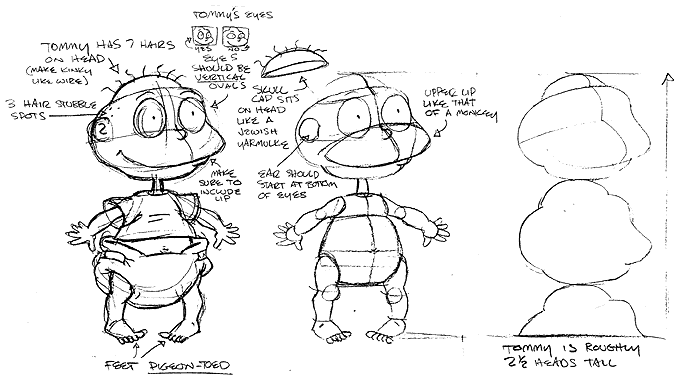
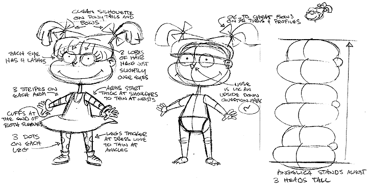
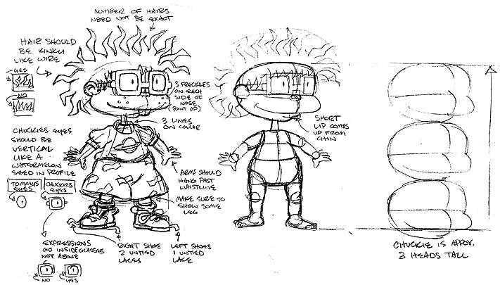
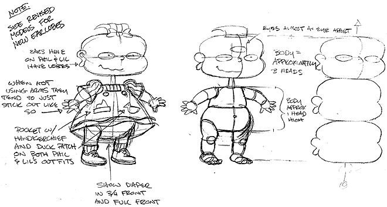

CHARACTER DESIGN PART TWO:
DETERMINING HEIGHT AND BASIC DETAILS

Klasky Csupo has numerous sourcebooks for its characters which include details on how to draw them.
These sourcebooks are called "bibles" because not only do they contain information on how the characters look, they also have info on how they relate with the other characters, what kinds of personalities they have and how tall they are in their cartoon universe.
As you can see above, Tommy is 2 and a half heads high.

Angelica, meanwhile, is half a head taller than Tommy. But even she would only be half the size of one of the adults.

In studying the dynamics of the Rugrats' bodies, one will notice a few basic traits: the necks are straight, long and skinny; the babies have faces that are much wider than long (while the adults have faces that are much longer than wide); the widest part of the head is the cheeks at the mouth; the eyes are circles or ovals with dots for pupils and when glasses are used, the rims are extremely thick; and each characters hair has a signature style that can easily be recognized, even in silhouette.

With the exception of Phil and Lil (who have peanut shaped ears), the other Rugrats have ears that are simple round "C" shapes with a "y" inside.